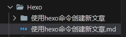

# 2.24 更新
使用 hexo new --path "文章标题" 来创建新文章，这样可以直接对应路径下创建，而不需要拖入操作。
# 使用 hexo 命令创建新文章
之前一直都是直接创建文件夹的方式来写文章，但是会有各种各样的 bug。去网上搜了下发现直接使用 hexo 命令是最简单的方法，于是这次用 hexo 来创建新文章。
# 使用命令
hexo new "文章标题"
# 使用说明
由于我有时会有图片说明，所以开启了 hexo 的资源引用功能。将_config.yml 中的 post_asset_folder 设置为 true 即可。
1 | post_asset_folder: true |
这样使用命令创建 md 文件的同时也会在 source/_posts 文件夹下创建一个文件夹，文件夹名为 文章标题 。之后我再将文件拖入对应的分类即可。

最后生成部署，一气呵成，但是应该有更便捷的方法，我暂时还不清楚😭，等之后再进行学习修改吧。